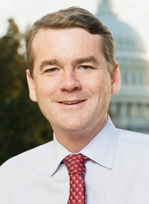
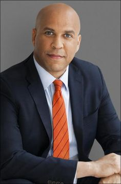
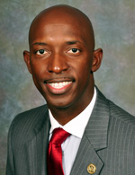

Gun Control

Gun Control
Making Gun Control More Stringent
Only a handful of states require that gun owners register some or all of their firearms, and no federal weapons registry exists. Some candidates have been more reticent to embrace proposals for such a national database, compared to their frequent calls for measures such as an assault weapons ban and a universal background check system. The prospect of mandatory gun registration maintains fierce opposition from conservatives and gun rights advocates who champion gun owners’ privacy and decry government overreach.
| Candidate | Candidate Image | Stance | Political Party |
|---|---|---|---|
| Michael Bennet |  | In favor of universal background checks. Sen. Michael Bennet told CBS News the Senate should pass the gun control legislation the House approved in February, which mandates federal criminal background checks on all gun sales. | Democratic |
| Joe Biden |

|
In favor of universal background checks. Former Vice President Joe Biden headed the gun task force that led the Obama administration to push for legislation requiring universal background checks in 2013. Biden has tweeted that "it’s clear we need to ... close the loophole that allows individuals to buy guns online or at gun shows without a background check."/td> | Democratic |
| Cory Booker |  | In favor of universal background checks. Sen. Cory Booker calls for “universal background checks” to close the “gun show loophole” and the “Charleston loophole.” | Democratic |
| Steve Bullock |

|
In favor of universal background checks. Montana Gov. Steve Bullock announced his support for "universal background checks and cracking down on straw purchases of guns" in an op-ed in The Great Falls Tribune.” | Democratic |
| Pete Buttigieg | In favor of universal background checks. | Democratic | |
| Julian Castro |

|
In favor of universal background checks. Former Housing and Urban Development Secretary Julián Castro said during a CNN town hall that "we need to make background checks universal."” | Democratic |
| John Delaney |

|
In favor of universal background checks. Former Rep. John Delaney calls for “universal background checks on gun sales, including closing the loophole for private sellers.” | Democratic |
| Tulsi Gabbard |

|
In favor of universal background checks. Rep. Tulsi Gabbard has called on Congress to pass legislation instituting "universal background checks" and "closing the gun show loophole." She was a co-sponsor of the background checks bill the House approved in February.” | Democratic |
| Kamala Harris |

|
In favor of universal background checks. Sen. Kamala Harris calls for “universal background checks,” as well as prohibiting those convicted of a federal hate crime from buying guns.” | Democratic |
| Amy Klobuchar |

|
In favor of universal background checks. Sen. Amy Klobuchar calls for “universal background checks by closing the gun show loophole. | Democratic |
| Wayne Messam |  | In favor of universal background checks. Mayor Wayne Messam told the Independent Journal Review he "would push for universal background checks" as president "for the purpose of just ensuring any individuals who should not have a gun, not have one." | Democratic |
| Tim Ryan | In favor of universal background checks. Rep. Tim Ryan was a co-sponsor of the background checks bill the House approved in February and has called for the Senate to take up the measure. | Democratic | |
| Bernie Sanders |

|
In favor of universal background checks. Sen. Bernie Sanders calls for “expand[ing] background checks," closing the “gun show loophole" and making all gun purchases “subject to the same background check standards.” | Democratic |
| Joe Sestak | In favor of universal background checks. Joseph Sestak calls for closing the “gun show loophole” and "creating a more effective national background check system, including by enabling states to add felons, domestic abusers, and other violent criminals to the background check database. | Democratic | |
| Tom Steyer | In favor of universal background checks. Thomas Steyer has called for a national referendum to institute universal background checks via popular vote. | Democratic | |
| Elizabeth Warren |

|
In favor of universal background checks. Sen. Elizabeth Warren said during a CNN town hall that "we need universal background checks. | Democratic |
| Marianne Williamson |

|
In favor of universal background checks. Marianne Williamson calls for “required universal background checks, including at gun shows.” | Democratic |
| Andrew Yang |

|
In favor of universal background checks. Andrew Yang calls for requiring all gun owners to "pass a federal background check, eliminating the gun show loophole." | Democratic |